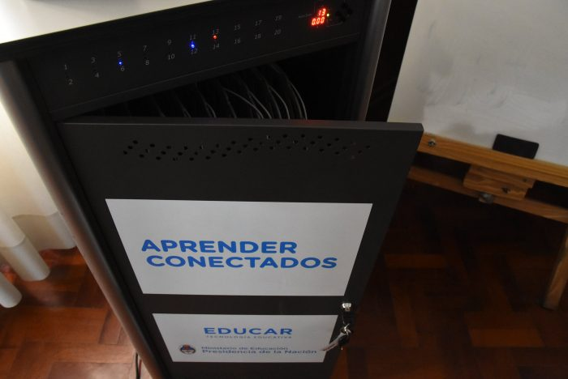

presentación y inventario
Pensando en la iniciación de la alfabetización digital de los y las infancias , se envían a la
escuelas bajo el proyecto "Aprender Conectados", 15 Tablets, enlazadas a un nodo central de carga,
que consiste en una gran caja metálica cargada sobre ruedas,
con un cable que se conecta con un cable a la una fuente de alimentación (Toma corriente).
Las tablets se conectan con un cable a una respectiva sección dividas por cables para conectar cada Tablet,
una Notebook de control y dos elementos Blue-bot.
-

Carro de carga 1
-
Cantida de TIC: 15
-
Cantida de Blue-bot: 2
Las TIC
Las tic como parte de los elementos conectados son tablet de la marca HUAWEI configurara con una interfas creada por el gobierno.
Estas cuentan con distintos aplicaciones las cuales vendran instaladas en las mismas, contando con una aplicacion de dibujo, scratch junior.
Las aplicaciones que tiene son:
*Cuentos
*Recursos Graficos
*Audio
*Robotica
*Programar
*Buscar/Enviar
*Aplicaciones
El Blue-bot
Como parte del material didactico enviado, requiere de un uso más cuidadoso,
cada uno de los robots esta hecho con un fin de poder ser programado por el uso de una tablet
con una aplicación que viene instalada en cada una de las TIC, aunque es más sensillo y practico
el uso fisico de los botones. Con los botones se le puede Programar un recorrido en base al uso
de los botones direccionales, tras trazar un curso se le dara inicio con el boton "play"(Boton central)
tras eso el mismo emitira luces y comenzara su recorrido.
A fines placticos se puede usar para realizar la resolución de laberintos, mapas previamente trazados
donde los y las infantes pueden aprender el uso de la planificación y la movilización con el fin de
llevar los mismos de manera ordenada de punto "A" a punto "B" en un estimulo a la imaginación.